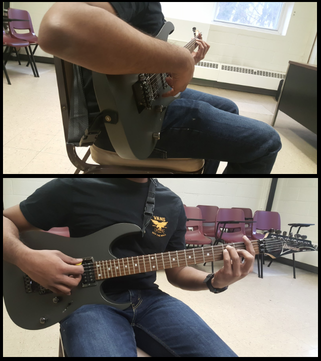
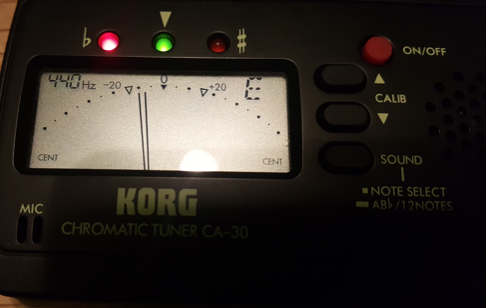
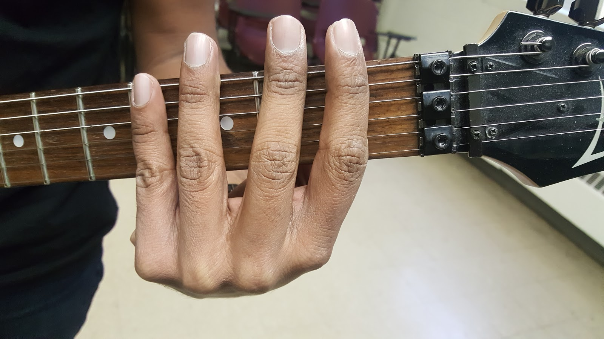
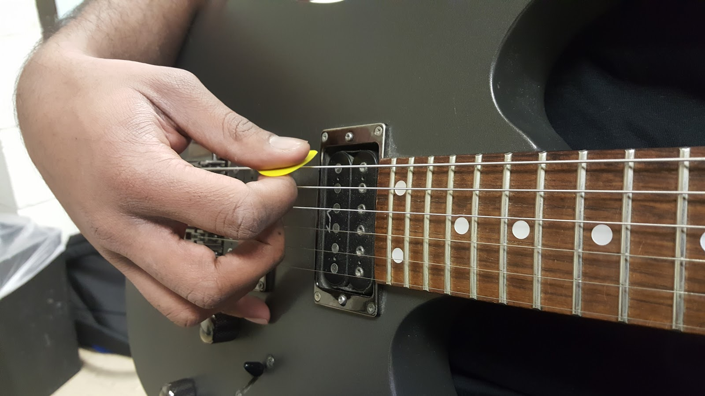
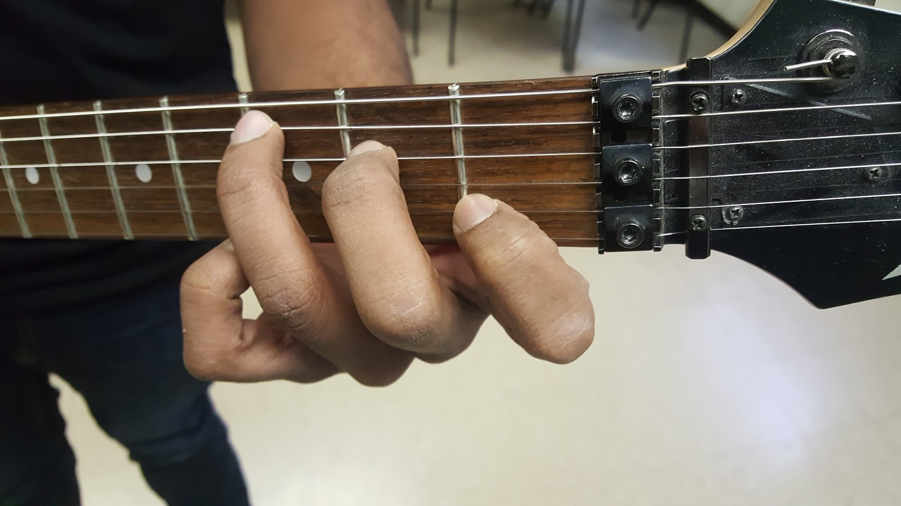
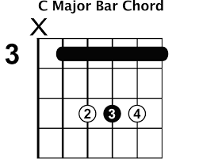
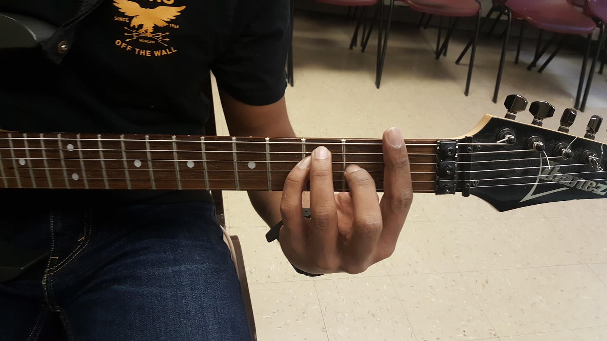

Table of Contents
Although string instruments have been developed throughout history in various forms and in different cultures, the development of guitars happened recently. The word guitar stems from the Greek word kithara, though the modern word is more directly descended from the Spanish word guitarra. During the 1800’s, the popularity of guitars started in Europe because of a man named Fernando Sor, he had a reputation as a master composer and performer. Even though there were many guitar builders during this time period, Antonio Torres (1817-1892) was known as the father of the modern classical guitar because he incorporated a large amount of new features and improvements for the guitar. The modern version of the guitar is based off of Torres’ design and is a standard base for other guitars.
Acoustic guitars became very popular in upcoming years however, there was no way to amplify the sound. Les Paul, a famous inventor and songwriter, developed one the first practical electric guitar to solve this problem. Les cut the body of an acoustic guitar in half, which resulted in no feedback problems and provided a louder sound. The next advancements for electric guitars was to include a solid body and to build magnetic pickups with the steel strings. These improvements allowed longer decay times and provided different styles of playing. Electric guitars has gained popularity in the 21st century and are constantly improving.
| Description of Guitar Parts | |
|---|---|
| Head: Located at the top of the guitar which holds the tuners | Sound Hole: The hollow part of an acoustic guitar where the sound comes out |
| Tuning Keys: Located on the head. Mechanism that allows the player to change the pitch/tune of a string. | Body: Main part of the guitar that provides support to the neck and includes a place for the sound hole. |
| Head: Located at the top of the guitar which holds the tuners | Sound Hole: The hollow part of an acoustic guitar where the sound comes out |
| Nut: Used to maintain proper distance between each string. | Pick Guard: Protects the body from scratches. |
| Neck: Long narrow part of the guitar that connects the head to the body | Pick up: Device on electric guitars that amplify sound |
| Fret: Lines located horizontally on the neck which allows the player to play diffrent notes. | Saddle: Found on the end of the string to enhance quality of sound |
| Position Markers: A quick and easy guidde to use frets | Bridge: Provides support for strings |
Buying a guitar is all about the sound you want. But there are many types of guitars such as: acoustic, classical, electrics, and bass. Some quality names to look for on a guitar are Ibanez, Fender, Gibson, Epiphone, Martin, Yamaha, etc. However, never buy a guitar online without trying it in person, never get a guitar shipped to your house, and never buy guitars from a non-music store such as: Toys R Us and Walmart. It is highly recommended that you go to a music store and try out as many guitars as you like. Pick a guitar that you feel comfortable with, sound that you like, and size that fits you. Ask staff members for assistance, and they will gladly help you pick the right guitar.
There are eight notes in music A, B, C, D, E, F, G, and again, A. These are the main letters symbolizing pitches in music. The different notes are due to the change in the pitch’s frequency. The difference in frequency between two consecutive notes is called a whole step. For example, if you play the C note, and then play a whole step up will make the pitch the D note. A whole step backwards from E will make the D note.
Half the differences in frequencies in each note is called a half step. These half steps are denoted with # (sharp) which means a half step higher, or ♭, (flat) meaning a half step lower.. A half step up from A results in A# (A sharp) which is the same as B♭(B flat). This rule is the same for all the notes with the exception of B# which is the same as C♭, and E# which is the same as F♭. These notes do not exist. B only goes up a half step to C and E only goes up a half step to F. So B and E only go up a half step to the next letter. In total, the notes you may come across are:
A, A# or B♭, B, C, C# or D♭, D, D# or E♭, E, F, F# or G♭, G, G# or A♭, and back to A.
Every song has its own key signature. A key is a group of notes based on one particular note and its scale. Scales are really important when learning to play guitar. Every song and chord can be derived from a scale. A scale is a group of eight consecutive notes in which the first note played is the name of the scale. Scales can be either major or minor.
Major and minor are words to describe the way musical compositions, scales, keys, or chords sound. Major usually describes a cheery, brighter connotation, and minor describes a darker, sadder connotation.
Major Scale
The major scale follows this format in ascending order: Whole step, whole step, half step, whole step, whole step, whole step, half step. For example the C major scale will start with the C note: W = whole step, H = half step
C D E F G A B and back to C
W W H W W W H
If you move every note on the C major scale up a whole step, it becomes the D major scale.
Minor Scale
Minor scales are similar to the major scale with only one difference. The major scale becomes a minor scale with changes in the third, sixth, and seventh note. The changes in the notes vary but only by a half step. For example, the C minor scale:
C, D, E♭,F, G A♭, B♭, C
Chords are a group of three or more notes played together to create a harmony. Chords are derived from scales. Like scales, they are divided into major and minor chords. A major chord is constructed out of the first, third and, fifth note of the scale with the same name.
C major chord = C E G
Shifting all the notes up a whole step results in the chord shifting up a whole step
D major chord = D F# A
Minor chords are constructed like major chords with the exception that the second note in the major chord is shifted down a half step.
C minor chord = C D# G
You may come across various other chords such as augmented, diminished, suspended, etc… As because they are complex they will not be covered in this guide.
In music, time signature describes the beat, specifically how many beats are in a measure, which is a rhythm in a piece of music.
A common time signature is 4/4. The way to count this beat is by counting to four repeatedly and rhythmically. Also put more stress on the first beat. (Note: In this guide, whenever beats are being mentioned the bold print number is being stressed).
There are many different types of time signatures. These are the most common ones.
| 4/4 | 1, 2, 3, 4, 1, 2, 3, 4, 1, 2, 3, 4, 1, 2, 3, 4.... |
| 3/4 | 1, 2, 3, 1, 2, 3, 1, 2, 3, 1, 2, 3.... |
| 2/4 | 1, 2, 1, 2, 1, 2, 1, 2... |
| 6/8 | 1, 2, 3, 4, 5, 6, 1, 2, 3, 4, 5, 6, 1, 2, 3, 4, 5, 6..... |
Note: This section (5.1) will demonstrate how to hold a right-handed guitar. Left-guitarists may follow this guide in the opposite manner.
There are two positions you can take when holding a guitar. Sitting and standing. The beginner’s approach would be to assume the sitting position.
The Sitting Position
The Standing Position
Note: The standing position requires a guitar strap.
Tuning your guitar to the standard tuning is absolutely essential before playing the guitar. Advanced guitarists learn how to tune just by listening to the sound each string makes. We can also rely on a guitar tuner. For this guide, we will be demonstrating with a Korg Chromatic Tuner.
Note: This section of the guide refers to right-handed guitarists. Left-handed guitarists can still follow this guide in the opposite manner.
The Left Hand
The fretboard allows you to play a lot of different notes on different octaves. To do this requires you to press down on a string in a fret. (Note: It is important to have your fingernails cut. Long fingernails will restrict your ability to hold down strings on the fretboard).
In this guide, your left fingers will be referred to as the following:
Index Finger .................. First Finger
Middle Finger..................Second Finger
Ring Finger ..................Third Finger
Pinky ..................Fourth Finger
For beginner guitarists, we will work with the first four frets. For any note that requires you to hold down the first fret, you must use your first finger to hold down the string. Second fret means second finger. Third fret means third finger. Fourth fret means fourth finger.
For intermediate guitarists who want to play beyond the fourth fret, the match up is similar. The fifth fret is for your first finger. The sixth fret is for your second finger. The seventh fret is for your third finger. And the eighth fret is for your fourth finger. The fretboard is divided into groups of four, with each fret being held down with consecutive fingers.
Note: This fingering rule is optional, but highly recommended. It will help develop finger agility, as well as muscle memory. Many advanced guitarists abort this rule when they play in their own style.
The Right Hand
Beginner guitarist should learn how to strike the strings with a guitar pick. Hold the guitar pick in your right hand. The wider part of the pick should be held between your thumb and index finger. You can use the guitar pick to play individual notes by lightly striking one string with the pick.
You can play multiple strings at one time. This is mainly used when holding chords. Striking multiple strings at the same time is called strumming. There are different patterns in which you strum, each corresponds to a time signature. The best way to describe the strumming pattern is with the direction in which you should strum. Down>, down, up, down, up, down is classified as a ¾ strumming pattern.
Strumming is all about wrist movement. Your right hand should move freely, independent from your arm which should actually move as little as possible.
To learn different strumming patterns, keep count of the beat in your head. For example, the 4/4 beat: 1, 2, 3, 4, 1, 2, 3, 4, 1, 2, 3,4… and strum along with it with more stress on the first beat. The pattern you strum should come natural if you are counting the beats correctly.
Learning scales on the guitar will help you adapt to any song in any key. If a song is originally written in the key of C major, then the notes that compose the song are based from the notes in the C major scale. While using sheet music is possible when learning scales, the easiest method is a tab chart, which this guide will demonstrate how to read.
This is a tab chart. The six lines represent the six strings of the guitar. The top line represents the high E string and the bottom line represents the lower E string.
The numbers correspond to the fret with 0 being the string with no fret held down, 1 meaning the first fret held down for the respective line/string the number is on. So each number represents a note that is to be plucked, and the entire tab sheet is read from left to right.
Now that you know how to read tabs, you can play any song. Simply use Google to search for song guitar tabs. And be sure to get the fingering positions correct as mentioned in Sec 5.3.
There are two things you need to know when playing chords: finger position and timing.
Reading chord charts are similar to reading tabs. Chords charts are basically finger maps. They tell you where to keep your fingers on the fretboard for a specific chord.me This is a chord chart for the C major chord. The vertical lines represent the strings of the guitar. The left-most line is the lower E string, and the right-most line is the higher E string. The horizontal lines represent the frets.
Think of this diagram as the neck of the guitar, held vertically.
The dots are finger maps. They tell you where to put your fingers. The numbers next to the dot tell you which finger to use: First, second, third, fourth. The number may appear inside the dots as well.
The Xs and Os on the top of the chart correspond to the strings that are not being held down. O means that the open string is included in the chord, and you should play it along with the other fingers you’ve held down. X means the open string is not included. So, do not play it with the chord.
Some chord charts have entire frets marked, or a type of bracket across the frets. Both of these symbols mean the same thing. It means you have to hold all the highlighted strings on the one fret with one finger. These are called barre chords. (This is typically used with much more advanced guitarists).
The number on the left side of the chord chart represents the fret number. It is due to the fact that mapping out the entire fretboard is a waste of space. Both of these charts show another way of holding the C major chord. Note: It is very easy to find chord charts online.
French, R. M. (2008, September 1). Engineering the Guitar: Springer Science+Business Media.
Retrieved from:
https://link-springer-com.ezaccess.libraries.psu.edu/chapter/10.1007%2F978-0-387-74369-1_1